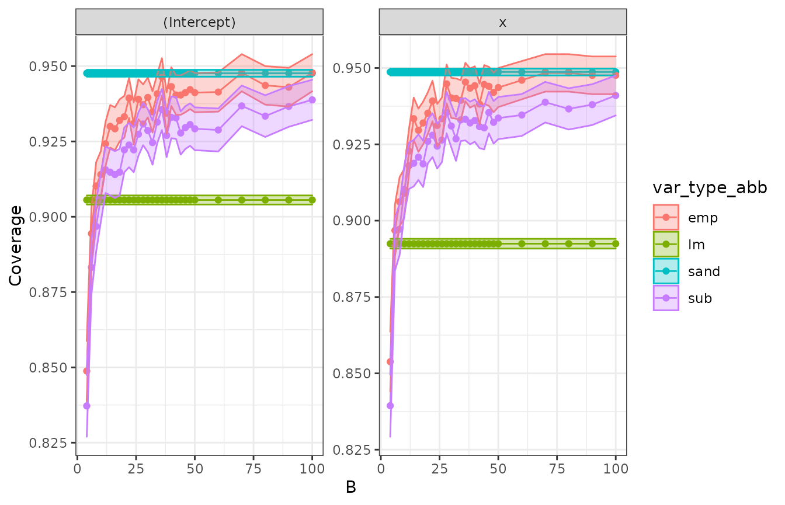
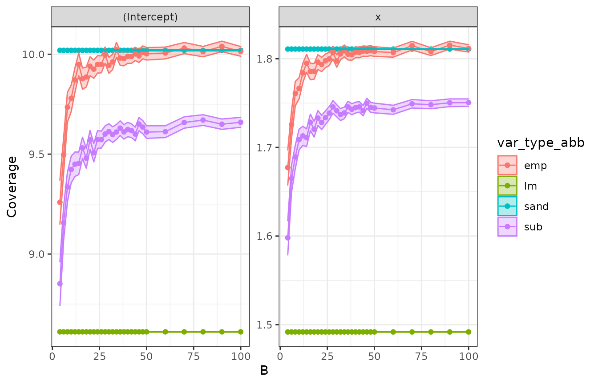

vignettes/hubbard-gee-simulation.Rmd
hubbard-gee-simulation.RmdFirst, we’ll need to install a set of packages that will be useful for the analysis. If you are a new user, you will need to manually run the following commands in a new R session before running the vignette code below:
The standard errors that are reported by maars are parametrized in different ways. For example, in the case of subsampling, empirical and multiplier bootstrap a critical common parameter for these standard errors is B, which corresponds to the number of bootstrap resamples. Thus, in presence of model misspecification, a key question is then
Given data generated by a (potentially misspecified) regression model, what is the effect of increasing the number of replications
Bon the coverage and width of the confidence intervals for the coefficients, when all else is held constant?
In this analysis, we intend to conduct a simulation study to understand how the standard errors reported by subsampling, empirical and multiplier bootstrap vary in as the replication parameter B increases. For comparison purposes it is helpful to also report the standard errors from the well specified, i.e., the lm() output, as well as the those from the sandwich estimator.
Being able to investigate such questions on model misspecification in a systemic manner, for both research and pedagogical purposes, is in fact a critical motivating reason for why maars was developed. We break down this systematic process in the following sections.
In order to investigate the effect of increasing the number of replication in the bootstrap standard errors under model misspecification, we first need to specify our misspecified data generating process. To do this we draw inspiration from the simulation study in (Hubbard et al. 2010). In this paper a univariate quadratic model was considered as the generating process. Here, we will consider the following data-generating mechanism:
\[Y = 3 X^{2} + \epsilon, \: X \sim U[0, 10], ; \epsilon \sim \mathcal{N}(0, \sigma^2)\]
In this vignette, we are interested in fitting a misspecified model to the data. We will simply consider OLS regression with an intercept and a term that is linear in \(X\). The following function generates i.i.d. data according to the described data-generating mechanism and fits the OLS model.
gen_ind_mod_fit <- function(n) {
x <- runif(n, 0, 10)
y <- 3 * x^2 + rnorm(n, mean = 0, sd = sqrt(100))
return(lm(y ~ x))
}We can also preemptively set up the function to calculate the various confidence intervals for a fitted lm model using the number of replications B and the number of observations n as follows. Note the arbitrary choices of \(m\) in the subsampling and of the weights in the multiplier bootstrap.
For simulation purposes, we need to first compute the projection parameters for the fitted model. Exact computation of such parameters requires analytical derivation. Alternatively, we can obtain their approximations by simply fitting an OLS on data with large sample size. Here, we do that by drawing \(10^{7}\) observations.
proj_par <- gen_ind_mod_fit(1e7) %>%
tidy() %>%
select(term, estimate)
# Display the projection parameters summary table
proj_par %>%
kable(x = ., format = "html", digits = 2, align = "c") %>%
kable_styling(position = "center") %>%
kable_classic(kable_input = .)| term | estimate |
|---|---|
| (Intercept) | -50.01 |
| x | 30.00 |
In order to run our simulation in a tidy manner, we will need to set up a tibble of grid of parameters.
NUM_COVG_REPS <- 1e4 # Number of coverage replications
grid_n <- 500 # Sample size for each modeling dataset
grid_B <- c(
seq(4, 50, by = 2),
seq(60, 100, by = 10)
)
grid_params <- crossing(
covg = 1:NUM_COVG_REPS,
n = grid_n
) %>%
crossing(B = grid_B)
# Display grid parameters
grid_params %>%
head() %>%
kable(x = ., format = "html", digits = 2, align = "c") %>%
kable_styling(position = "center") %>%
kable_classic(kable_input = .)| covg | n | B |
|---|---|---|
| 1 | 500 | 4 |
| 1 | 500 | 6 |
| 1 | 500 | 8 |
| 1 | 500 | 10 |
| 1 | 500 | 12 |
| 1 | 500 | 14 |
In the code above, we set up a grid of parameters in a single tibble. We take \(B \in \{4, 6, \ldots, 50, 60, 70, \ldots, 100\}\) (our main varying parameter), sample size to be 500 for each sampled dataset and 10^{4} replications.
We are finally ready to run the simulations with a focus on getting the coverage and average width of confidence intervals average as a function of \(B\). The basic hypothesis driving the simulations is that the values of \(B\) increase, we get better coverage and smaller width, but also, more importantly, we get tighter confidence bands as the number of replications increases.
First, we do the most computationally intensive step. Since our grid of parameters grid_params consists of a single tibble, we can utilize the power of the purrr package to map our custom confidence interval function we have previously created. We do this by simply mapping it across each row of our grid of parameters. Since the following computation is quite computationally intensive, we have previously run it on a cluster and stored the data. Here, we load the data in the background just for plotting.
plan(multicore, workers = 4)
confint_replications <- grid_params %>%
mutate(out_confint = future_pmap(
.l = .,
.f = get_ind_confint,
.options = furrr_options(seed = TRUE),
.progress = TRUE
))Since our output is in a tidy tibble, we can use the power and flexibility of data frame manipulation of say the tidyverse set of packages to consolidate our results as follows:
# Get tidy format of maars confidence interval output
all_confint <- confint_replications %>%
unnest(out_confint) %>%
filter(stat_type == "conf.low" | stat_type == "conf.high") %>%
pivot_wider(names_from = stat_type, values_from = stat_val) %>%
select(n, B, term, var_type_abb, conf.low, conf.high)
# Get confidence interval coverage
all_confint_coverage <- all_confint %>%
inner_join(proj_par, by = "term") %>%
mutate(ind_coverage = ifelse(conf.low <= estimate &
conf.high >= estimate, 1, 0))Now that we have our simulated data ready thanks to the convenience of the tidy output from maars_lm objects, we are ready for final manipulations for confidence interval coverage levels, and also the average confidence widths.
Ideally, it would be nice to compute the confidence intervals coverage and average width not only for subsampling, empirical and multiplier bootstrap, but also for the well-specified values from lm() and the sandwich estimator values. Note that the latter two estimators are not dependent on the replication parameter B, which is the central object of study. So our approach is to simply split the lm and sandwich estimator values and for the subsampling, empirical and multiplier bootstrap outputs. These can be easily combined together afterwards into a single tibble for plotting purposes.
First let’s get the required results for lm and sandwich estimators. We take our function all_confint_coverage and simply average over all replications and values of B.
# summarise sandwich and lm
cw <- all_confint_coverage %>%
filter(var_type_abb %in% c("sand", "lm")) %>%
group_by(term, var_type_abb) %>%
summarise(
coverage = mean(ind_coverage),
avg_width = mean(conf.high - conf.low),
std.error.avg_width = sd(conf.high - conf.low) / sqrt(n()),
std.error.coverage = sd(ind_coverage) / sqrt(n())
) %>%
crossing(B = grid_B) # for plottingWe then obtain our three bootstrap summaries.
# summarise empirical, multiplier, subsampling
cw_x_B <- all_confint_coverage %>%
filter(var_type_abb %in% c("emp", "mult", "sub")) %>%
group_by(term, B, var_type_abb) %>%
summarise(
coverage = mean(ind_coverage),
avg_width = mean(conf.high - conf.low),
std.error.avg_width = sd(conf.high - conf.low) / sqrt(n()),
std.error.coverage = sd(ind_coverage) / sqrt(n())
)Note that, in order to be entirely consistent with our maars philosophy, we should have computed the standard errors above with the bootstrap, and not be using the normal approximation of the sample average. However, that operation would require some more computational effort for our machine, which we would like to avoid for now.
Since our results have followed a tidy workflow, which is naturally encouraged by design in maars, we can now combine our output tibbles for the various confidence coverages and widths. This is simply done as follows:
Now we are ready to plot the required outputs. First we plot the confidence interval coverage:
confint_plt <- cw_all %>%
ggplot(aes(x = B, y = coverage, fill = var_type_abb, col = var_type_abb)) +
geom_point() +
geom_line() +
geom_ribbon(aes(
ymin = coverage - 1.96 * std.error.coverage,
ymax = coverage + 1.96 * std.error.coverage
), alpha = 0.3) +
labs(y = "Coverage") +
theme_bw() +
facet_wrap(~term, scales = "free")
confint_plt
Then we plot the average confidence interval width as a function of B. Note that lm and sandwich outputs are a single average value plotted across all B.
avgwidth_plt <- cw_all %>%
ggplot(aes(x = B, y = avg_width, fill = var_type_abb, col = var_type_abb)) +
geom_point() +
geom_line() +
geom_ribbon(aes(
ymin = avg_width - 1.96 * std.error.avg_width,
ymax = avg_width + 1.96 * std.error.avg_width
), alpha = 0.3) +
labs(y = "Coverage") +
facet_wrap(~term, scales = "free") +
theme_bw()
avgwidth_plt
In the plot, we observe that
B increases, both subsampling, empirical bootstrap, and multiplier bootstrap confidence intervals coverage converge to the specified 95% level. Note that coverage for subsampling converges more slowly than the empirical bootstrap’s. Sandwich also achieves 95% coverage. In contrast, lm coverage is only about 90%.
lm has substantially narrower confidence intervals, which, however, cover the projected parameter of interest in a smaller share of the repetitions.We want to emphasize that from a practical point of view using maars enables such experiments to be conducted in a principled manner. More specifically, using maars encourages a tidy workflow to systematically analyze problems of this kind.
Hubbard, Alan E, Jennifer Ahern, Nancy L Fleischer, Mark Van der Laan, Sheri A Satariano, Nicholas Jewell, Tim Bruckner, and William A Satariano. 2010. “To Gee or Not to Gee: Comparing Population Average and Mixed Models for Estimating the Associations Between Neighborhood Risk Factors and Health.” Epidemiology, 467–74.